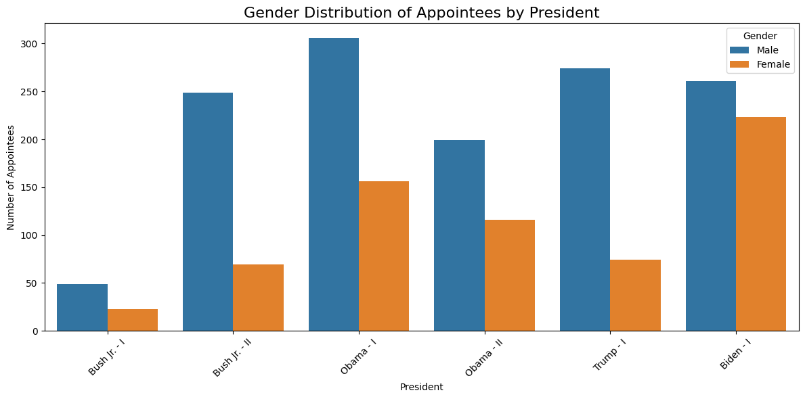
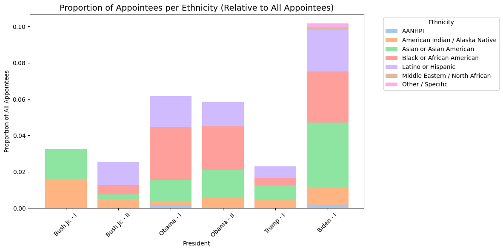

A fully automated pipeline to build a comprehensive dataset of 21st-century presidential appointees and their career backgrounds.
In each administration, roughly 4,000 individuals are appointed by the U.S. president to senior executive positions — from cabinet secretaries to agency heads and senior deputies. These appointees are central to questions of democratic accountability, bureaucratic competence, and the relationship between political elites and the state. Yet existing datasets are either narrow in scope or limited to a small set of variables, because collecting this information has historically been slow, expensive, and prone to error.
This project constructs a comprehensive biographical dataset of Senate-confirmed presidential appointees serving from the second George W. Bush administration through the Biden administration. Starting from the Plum Book — the official government directory published at the end of each presidential term — a fully automated pipeline integrating web scraping, Large Language Models, and NLP techniques collects and structures demographic, educational, and career information for each individual at scale.
"To what extent do populists' appointments to top civil service positions reflect their populist rhetoric?"
Beyond the dataset itself, the project aims to test theoretical hypotheses about how populist administrations differ from their predecessors along three axes: anti-elitism (elite university attendance, seniority of prior positions), anti-bureaucracy (public sector experience, administrative training), and patronage (the social network structure of insider appointments).
This project is a collaboration with Dr. Lula Chen (MIT Gov Lab), who co-developed the pipeline and co-authors all outputs arising from the project.
All biographical information is publicly available but scattered across government directories, congressional records, news archives, agency websites, and LinkedIn profiles. The pipeline integrates these sources into a single, structured, and validated dataset.
Plum Book PDFs (2008–2024) are downloaded from the official government repository, split page-by-page, and processed by GPT-4o to extract structured appointment records — position title, department, location, appointment type, and incumbent name. Yields 7,800–10,000 rows per edition.
Each Plum Book entry is linked to the corresponding Senate confirmation record via the Congress.gov API (107th–119th Congresses). An embedding-based candidate search narrows the field to the top-5 matches per entry; a GPT-4o-mini "judge" model then selects the best match or rejects all candidates. Matching precision is near 100%, recall between 80–90%.
For each matched appointee, a Google Custom Search query retrieves the top-5 relevant web pages. After HTML cleaning with BeautifulSoup and relevance filtering with GPT-4o-mini, an ensemble of three models (GPT-4o, Claude Haiku, Gemini 2.0) independently extracts demographic, educational, and career information. A final GPT-4o "judge" aggregates and reconciles the nine outputs into three structured JSON objects per individual.
Career positions are labeled by sector (public, private, NGO, academia, military, etc.) and policy area using a RAG-based pipeline: a GPT-generated description of each employer organisation informs a classification call against a CoREx-derived codebook covering 15 sectors and 16 policy areas. Education records are normalized by field of study and degree type.
A stratified random sample of outputs is cross-checked against primary sources. Validation results are reported per variable and per pipeline stage to provide future users with a transparent picture of data quality.
Extraction accuracy has been validated on stratified random samples. Demographic and education fields perform near-perfectly; career fields show strong precision and recall across all subfields.
Demographic Extraction
| Field | Precision | Recall | F1 |
|---|---|---|---|
| Birth Year | 0.989 | 1.000 | 0.994 |
| Birthplace | 0.955 | 0.988 | 0.971 |
| Gender | 0.965 | 0.943 | 0.953 |
| Ethnicity | 1.000 | 1.000 | 1.000 |
Career Field Extraction
| Field | Precision | Recall | F1 |
|---|---|---|---|
| Start Year | 0.954 | 0.997 | 0.975 |
| End Year | 0.964 | 1.000 | 0.982 |
| Position Title | 0.955 | 0.945 | 0.950 |
| Workplace | 0.956 | 0.938 | 0.947 |
With data collection complete across Steps 1–3, initial descriptive patterns are already visible. The figures below show the gender composition and ethnic diversity of presidential appointees across six administrations, illustrating both long-run trends and the sharp discontinuity associated with the Trump administration.

The share of female appointees has grown steadily since Bush Jr., peaking under Biden — where female appointees (≈220) nearly matched male appointees (≈260). The Trump administration marks a clear reversal of this trend, with the largest gender gap since the second Bush term.

The proportion of non-white appointees increased substantially under Obama (≈6%) and reached its highest level under Biden (≈10%), driven primarily by growth in Black/African American and Latino/Hispanic appointees. Ethnic diversity dropped sharply under Trump (≈2.3%), returning to levels below those of the Bush years.
A 4,000–5,000 word research note describing the full pipeline, reporting validation results, and presenting a first descriptive overview of appointee backgrounds across administrations. Designed to serve as a reference for future users of the dataset.
A theory-testing paper examining whether populist administrations appoint differently from their non-populist predecessors. Tests three hypothesis clusters — anti-elitism, anti-bureaucracy, and patronage — using the full biographical dataset and a comparative design spanning the Bush, Obama, Trump, and Biden administrations.
A country chapter on the United States for the COST CoREx comparative handbook, following the shared template and codebook. Covers the institutional structure of top-level executive positions and a descriptive analysis of the 2024 cohort of appointees.